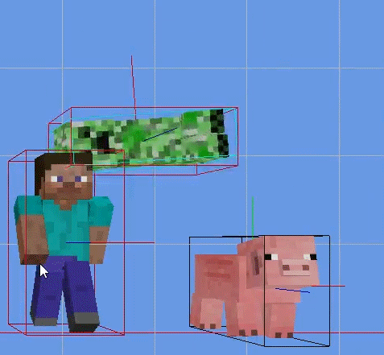
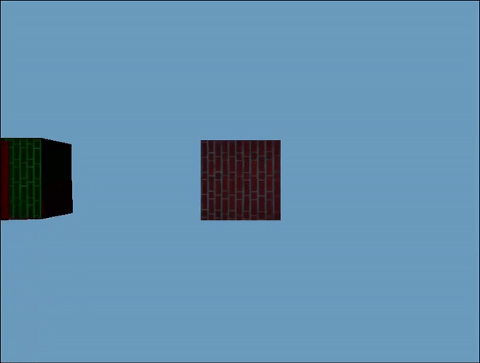

<!DOCTYPE html>
<html lang="en">
<head>
	<meta charset="utf-8">
	<meta http-equiv="X-UA-Compatible" content="IE=edge">
	<meta name="viewport" content="width=device-width, initial-scale=1">
	<meta name="Collisions and Quaternions Projects" content="">

	<title>Collisions and Quaternions</title>

	<!-- Bootstrap Core CSS -->
	<link href="../vendor/bootstrap/css/bootstrap2.min.css" rel="stylesheet">

	<link href="../vendor/font-awesome/css/font-awesome.min.css" rel="stylesheet" type="text/css">

	<!-- Theme CSS -->
	<!--<link href="css/agency.min.css" rel="stylesheet">-->
	<link href="../css/creative2.css" rel="stylesheet">

	<!-- Custom Fonts -->
	<link href='https://fonts.googleapis.com/css?family=Open+Sans:300italic,400italic,600italic,700italic,800italic,400,300,600,700,800' rel='stylesheet' type='text/css'>
	<link href='https://fonts.googleapis.com/css?family=Merriweather:400,300,300italic,400italic,700,700italic,900,900italic' rel='stylesheet' type='text/css'>

	<!-- Plugin CSS -->
	<link href="../vendor/magnific-popup/magnific-popup.css" rel="stylesheet">

	<!-- Image JavaScript -->
	<script src="http://ajax.googleapis.com/ajax/libs/jquery/1.11.0/jquery.min.js"></script>

	<!-- Slick CSS -->
	<link rel='stylesheet' href='https://cdnjs.cloudflare.com/ajax/libs/slick-carousel/1.6.0/slick.min.css'>
	<link rel='stylesheet' href='https://cdnjs.cloudflare.com/ajax/libs/slick-carousel/1.6.0/slick-theme.min.css'>
	<link rel="stylesheet" href="../css/style2.css">

</head>

<body id="page-top">

	<div id="header"></div>
	
		<!-- Portfolio Modal -->
	<div class="modal-body" align="center" style="margin-top: 20px;">
		<!-- Project Details Go Here -->
		<h2>Collisions and Quaternions Projects</h2>
		</br>
		<div>
			</br>
			<h3>Overview:</h3> 
			<p>This is a series of projects that explore various math topics that are useful for game development (Quaternions, Collision Detection, etc).</p>
			<h3>Role:</h3> 
			<p>
				The first project started out as a learning experience for box collisions in 3d. Axis aligned bounding boxes were the first to tackle and they were quite easy.
				<pre><code>
if (max1.x < min2.x || min1.x > max2.x ||
	max1.y < min2.y || min1.y > max2.y ||
	max1.z < min2.z || min1.z > max2.z)
				</code></pre>
			</p>
			<p>
				The next objective was oriented bounding boxes using separate axis theorem. To start, we get the test axes, which are all the axes perpendicular to our shape.
				<pre>
std::vector<DirectX::XMVECTOR> testAxis;<br>
// Do this for the x, y, z axes of both box1 and box2<br>
DirectX::XMFLOAT3 box1X = box1.GetTransform()->GetRotation().RotateVector(DirectX::XMFLOAT3(1.0f, 0.0f, 0.0f));<br>
testAxis.push_back(DirectX::XMLoadFloat3(&box1X));<br>
<br>
for (int i = 0; i < 3; i++)<br>
{<br>
&emsp;&emsp;&emsp;for (int j = 3; j < 6; j++)<br>
&emsp;&emsp;&emsp;{<br>
&emsp;&emsp;&emsp;&emsp;&emsp;&emsp;if (std::abs(DirectX::XMVectorGetByIndex(DirectX::XMVector3Dot(testAxis[i], testAxis[j]), 0)) < 0.995f)<br>
&emsp;&emsp;&emsp;&emsp;&emsp;&emsp;{<br>
&emsp;&emsp;&emsp;&emsp;&emsp;&emsp;&emsp;&emsp;&emsp;testAxis.push_back(DirectX::XMVector3Normalize(DirectX::XMVector3Cross(testAxis[i], testAxis[j])));<br>
&emsp;&emsp;&emsp;&emsp;&emsp;&emsp;}<br>
&emsp;&emsp;&emsp;}<br>
}
					</pre>
			</P>
			<p>
				From there, we'll project each cube onto the test axis and see if they are intersecting. If any one test does not result in an intersection, there is no collision.
				<pre>
for (unsigned i = 0; i < testAxis.size(); i++)<br>
{<br>
&emsp;&emsp;&emsp;float distance = std::abs(<br>
&emsp;&emsp;&emsp;&emsp;&emsp;&emsp;DirectX::XMVectorGetByIndex(<br>
&emsp;&emsp;&emsp;&emsp;&emsp;&emsp;&emsp;&emsp;&emsp;DirectX::XMVector3Dot(<br>
&emsp;&emsp;&emsp;&emsp;&emsp;&emsp;&emsp;&emsp;&emsp;&emsp;&emsp;&emsp;positionDifference,<br>
&emsp;&emsp;&emsp;&emsp;&emsp;&emsp;&emsp;&emsp;&emsp;&emsp;&emsp;&emsp;testAxis[i]),<br>
&emsp;&emsp;&emsp;&emsp;&emsp;&emsp;&emsp;&emsp;&emsp;0));<br>
<br>
&emsp;&emsp;&emsp;float leftSide = box1.GreatestPointAlongAxis(testAxis[i]);<br>
&emsp;&emsp;&emsp;float rightSide = box2.GreatestPointAlongAxis(testAxis[i]);<br>
<br>
&emsp;&emsp;&emsp;if (distance > leftSide + rightSide)<br>
&emsp;&emsp;&emsp;{<br>
&emsp;&emsp;&emsp;&emsp;&emsp;&emsp;return false;<br>
&emsp;&emsp;&emsp;}<br>
}
				</pre>
			</p>
			<p>
				The result ended up looking like this:
			</p>
			
			</br></br>
			<p>
				After this came the next learning project. It was about quaternions. The code for that can be found at <a href="https://github.com/TimothyJR/GameMath/blob/main/GameMath/Quaternion.cpp">here</a>. Using my quaternion implementation, I made a little example, using cubes that are rotating and changing materials when they intersect with each other:
			</p>
			
			</br></br>
			<ul class="list-inline">
				<li>Date: 2015-2021</li>
				<li>Software: C++ / OpenGL / DirectX</li>
			</ul>
		</div>
	</div>
	<!-- jQuery -->
	<script src="../vendor/jquery/jquery.min.js"></script>

	<script> 
		$(function(){
			$("#header").load("../header.html"); 
		});
		$(function(){
			$("#footer").load("../footer.html"); 
		});
	</script> 

	<!-- Bootstrap Core JavaScript -->
	<script src="../vendor/bootstrap/js/bootstrap2.min.js"></script>

	<!-- Plugin JavaScript -->
	<script src="https://cdnjs.cloudflare.com/ajax/libs/jquery-easing/1.3/jquery.easing.min.js"></script>
	<script src="../vendor/scrollreveal/scrollreveal.min.js"></script>
	<script src="../vendor/magnific-popup/jquery.magnific-popup.min.js"></script>
	<script>
	function pauseAllVideos() 
	{ 
		$("embed").each(function() { 
			var src= $(this).attr('src');
			$(this).attr('src',src);  
		});
	}
	</script>
	<script>
	$(document).ready(function() {
		var $anchor = $(this);
		$('html, body').stop().animate({
			scrollTop: ($($anchor.attr('href')).offset().top - 50)
		}, 1250, 'easeInOutExpo');
		event.preventDefault();
	});
	</script>
	
	<!-- Theme JavaScript -->
	<script src="../js/creative2.min.js"></script>
	

</body>
	<div id="footer">
</div>
</html>
